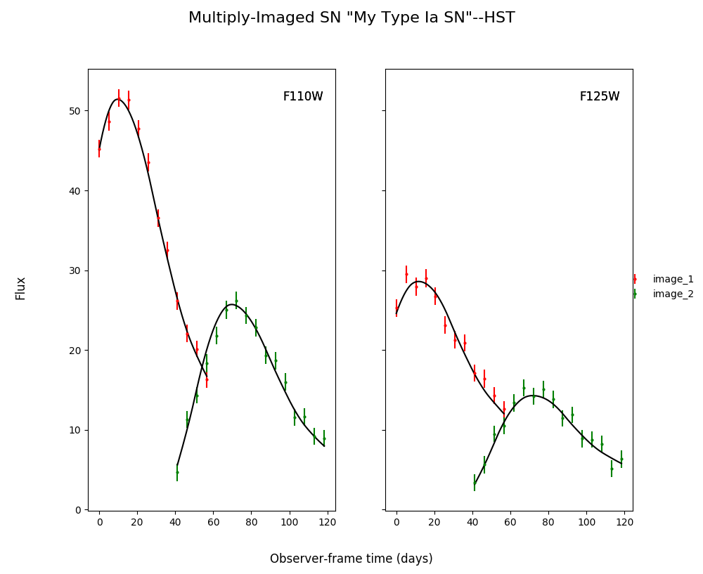

Simulating with SNTD¶
No Microlensing¶
Create a simulated multiply-imaged supernova that we can then fit, with no microlensing included in the simulation. Note that your final printed information will be different, as this is a randomly generated supernova.
import sntd
import matplotlib.pyplot as plt
myMISN = sntd.createMultiplyImagedSN(sourcename='salt2-extended', snType='Ia', redshift=1.33,z_lens=.53, bands=['F110W','F125W'],
zp=[26.8,26.2], cadence=5., epochs=35.,
time_delays=[10., 70.], magnifications=[7,3.5], objectName='My Type Ia SN',telescopename='HST')
print(myMISN)
myMISN.plot_object()
plt.show()
Out:
Telescope: HST
Object: My Type Ia SN
Number of bands: 2
------------------
Image: image_1:
Bands: ['F125W', 'F110W']
Date Range: 0.00000->56.61765
Number of points: 24
Metadata:
z:1.33
t0:10.0
x0:6.705277050626183e-06
x1:1.4432846464012696
c:0.06617632319259452
sourcez:1.33
hostebv:0.0967741935483871
lensebv:0
lensz:0.53
mu:7
td:10.0
------------------
Image: image_2:
Bands: ['F125W', 'F110W']
Date Range: 41.17647->118.38235
Number of points: 32
Metadata:
z:1.33
t0:70.0
x0:3.3526385253130915e-06
x1:1.4432846464012696
c:0.06617632319259452
sourcez:1.33
hostebv:0.0967741935483871
lensebv:0
lensz:0.53
mu:3.5
td:70.0
------------------
Out:
{kind=link}
Simulating Microlensing¶
Simulate a microlensing microcaustic, and use it to include a microlensing effect in the simulated supernova.
import numpy as np
myML=sntd.realizeMicro(nray=50,kappas=1,kappac=.3,gamma=.4)
time,dmag=sntd.microcaustic_field_to_curve(field=fitData,time=np.arange(0,100,1),zl=.5,zs=1,plot=True)
plt.show()
Out:

Including Microlensing in Simulations¶
Now we can take the simulated microcaustic and use it to include microlensing in a multiply-imaged supernova simulation.
myMISN2 = sntd.createMultiplyImagedSN(sourcename='salt2-extended', snType='Ia', redshift=1.33,z_lens=.53, bands=['F110W','F125W'],
zp=[26.8,26.2], cadence=5., epochs=35.,
time_delays=[10., 70.], magnifications=[7,3.5], objectName='My Type Ia SN',telescopename='HST',
microlensing_type='AchromaticMicrolensing',microlensing_params=myML)
myMISN2.plot_object(showMicro=True)
Out:

Measuring Time Delays with SNTD¶
Fitting a Multiply-Imaged Supernova¶
There are 3 methods built into SNTD to measure time delays (separate, combined, color). They are accessed by the same function:
fitCurves=sntd.fit_data(myMISN2,snType='Ia', models='salt2-extended',bands=['F110W','F125W'],
params=['x0','x1','t0','c'],constants={'z':1.33},
bounds={'t0':(-15,15),'x1':(-2,2),'c':(0,1)},method='separate',microlensing=None)
fitCurves.plot_object(showFit=True,method='separate')
plt.show()
Out:

Estimating Uncertainty Due to Microlensing¶
Now we can estimate the additioinal uncertainty on the time delay measurement caused by microlensing. The final number printed below is just the measured microlensing uncertainty, there is an additional uncertainty on t0 that can be combined in quadrature.
fitCurves=sntd.fit_data(myMISN2,snType='Ia', models='salt2-extended',bands=['F110W','F125W'],
params=['x0','x1','t0','c'],constants={'z':1.33},
bounds={'t0':(-15,15),'x1':(-2,2),'c':(0,1)},method='separate',microlensing='achromatic',nMicroSamples=10)
print(fitCurves.images['image_1'].fits.final_errs['micro'])
Out:
0.7979254133200879